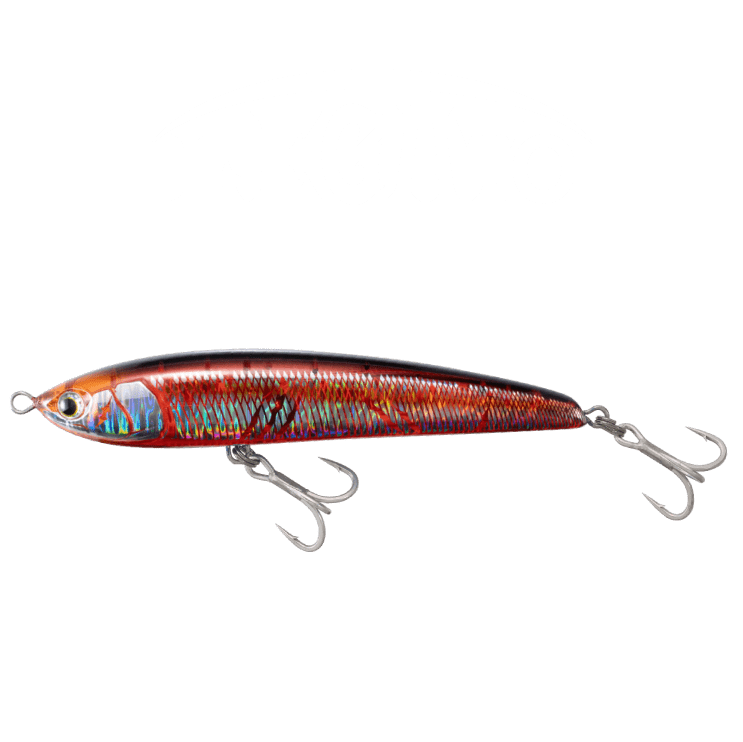
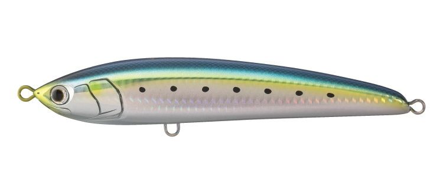
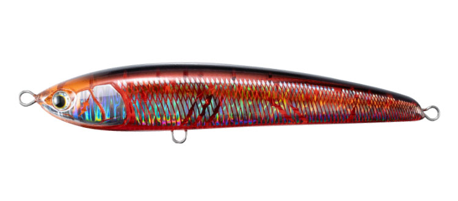
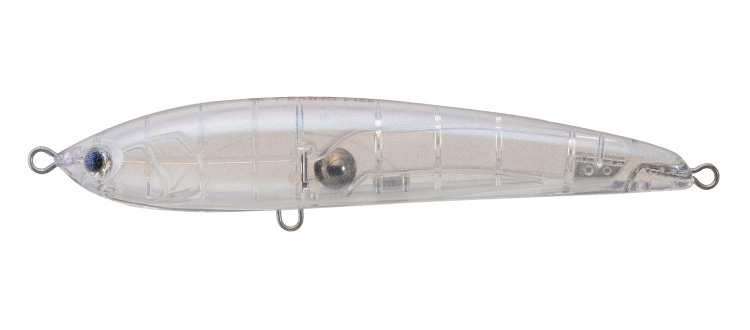
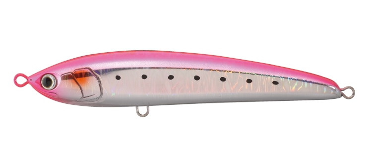
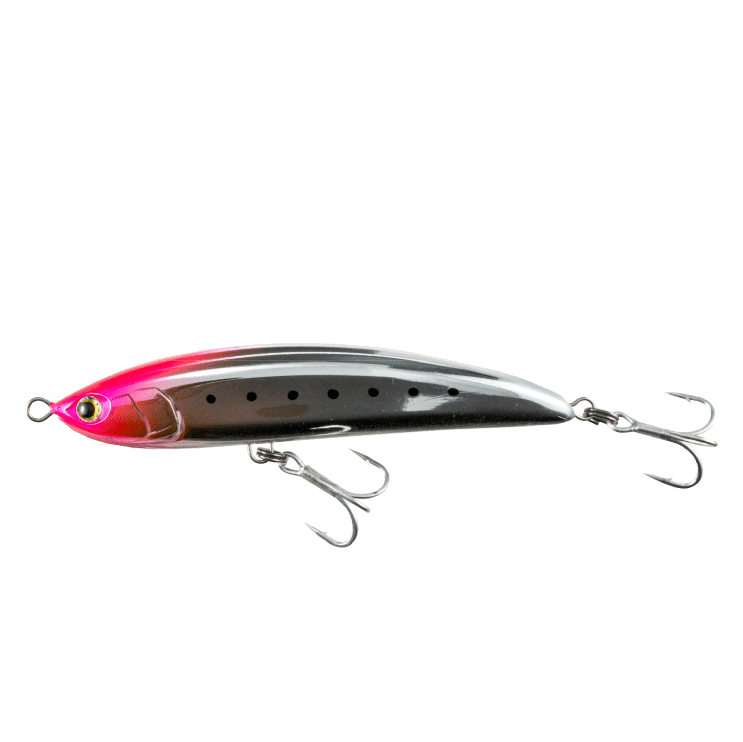
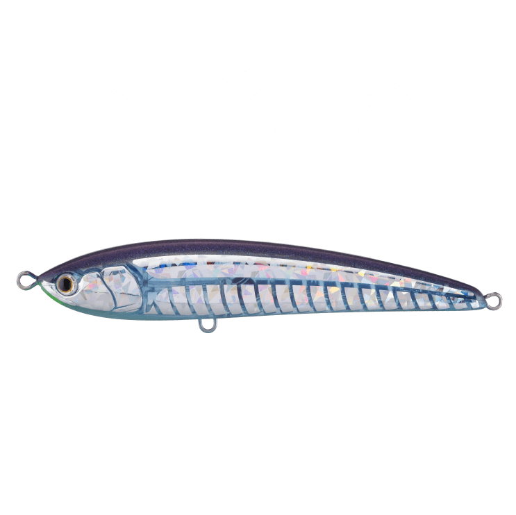

レガート F165
（LEGATO F165）
レガート F165（LEGATO F165）はMaria（マリア）のペンシルベイトです。
"チェイスしてくるのに口を使わない"——そんなシビアな青物を攻略するために作られた、見切られる前に喰わす高速リトリーブ対応ペンシルです。ジャークによるダイビングアクションに加え、ダイブ後にスピードを付けたリトリーブで、水面直下を強いフラッシングを伴ったキレのあるスイミングで泳ぎ続けます。レガート F165は「PE3〜4号クラス対応のダウンサイズモデル」です。

画像出典:Maria公式HP
スペック
- メーカー
- Maria（マリア）
- タイプ
- ペンシルベイト（フローティング）
- 全長
- 165mm
- 重量
- 50g（フック・リング付き）
- フック
- 太軸トリプル#1/0（標準装備）・シングル2.5〜3.5g
- リング
- ファイターズリング ダエン#6（標準装備）
- 適正タックル
- 10ftクラスのショアプラッギングロッド（キャストMAX80g）・6000〜8000番・PE3〜4号＋ナイロンリーダー60〜100lb
- ターゲット
- ヒラマサ・ブリなど
▼今すぐチェック

レガート F165の特徴
スローな操作を見切る青物を、スピードでリアクション攻略
-
高速リトリーブでキレのあるスイミング
ダイブ後にスピードを付けてハンドルを巻くと、水面直下を強いフラッシングを伴ったキレのあるスイミングで泳ぎ続け、警戒心の高い青物をリアクションで攻略する。
-
マグネット重心移動
キャスト時は「カチーン！」とリア重心になって安定した飛距離が出る。着水後はセンター重心に戻り、水平に近い姿勢で高速リトリーブに対応。急な浮上を抑えるので、ミスバイト後も追い食いを誘える。
-
イレギュラーなスライドを生むディンプルサイド
ボディ側面の凹み（ディンプルサイド）が高速リトリーブ時に水を掴み、イレギュラーなスライドアクションを意図的につくり出す。
レガート F165の使い方
ジャークでダイブさせたあと、スピードを付けたリトリーブで水面直下を泳がせるのが基本です。速い動きで、青物に見切る時間を与えないのがコツ。トビウオやサンマなど水面を速く動くベイトを食べている時は、ダイブ＆高速リトリーブを繰り返しましょう。
レガート F165の得意な状況
PE3〜4号クラスのタックルで扱いやすい、ショアからの青物キャスティングの中心サイズです。
トビウオやサンマなど水面で動きの速いベイトを食べている時や、日中・ベタ凪で青物の警戒心が高い時が得意です。公式では、操作性に優れる「ラピード」をベースに、朝マヅメや時化はハイアピールの「ローデッド」、日中やベタ凪は「レガート」と使い分けるよう紹介されています。
ワンポイント
フックとリングが標準装備なので、買ってすぐに使えます。
レガートのサイズの使い分け
| モデル | 全長・重さ | 特徴 |
|---|---|---|
| レガート F140 | 140mm・35g | ライトタックル（PE2〜3号クラス）で投げ易いダウンサイズモデル |
| レガート F165（この記事） | 165mm・50g（フック・リング付き） | PE3〜4号クラス対応のダウンサイズモデル |
| レガート F190 | 190mm・60g（フック・リングなし） | 見切られる前に喰わす！高速リトリーブ対応ペンシル |
| レガート F230 | 230mm・95g | ヘビータックル（PE6〜8号）対応の大型モデル |
※数値は公式ページより。各サイズの記事もあわせてご覧ください。
オススメカラー
レガート F165のカラーから4色を紹介します。

001 イワシソルトゲームのド定番ベイトカラー。カラーに困ったときはイワシ。

002 血みどろ弱って血のにじんだベイトをイメージした赤系。日中の低活性時や晴れ間に。

008 玄界クリア透け感のあるクリア系。澄んだ潮で見切られにくい。

009 ピンクイワシ背中の蛍光ピンクで視認性が高く、ルアーの位置やバイトが分かりやすい。
画像出典:Maria公式HP
レガート F165に似ているルアー
-

レガート F140 マリア 詳細はこちら＞同じレガートの140mmモデル。ライトタックル（PE2〜3号クラス）で投げ易いダウンサイズモデル。
-

レガート F190 マリア 詳細はこちら＞同じレガートの190mmモデル。見切られる前に喰わす！高速リトリーブ対応ペンシル。
-
 ラピード F160
マリア
詳細はこちら＞
ラピード F160
マリア
詳細はこちら＞
操作性に優れる食わせ型のダイビングペンシル。ダイブで食わせたい時に。